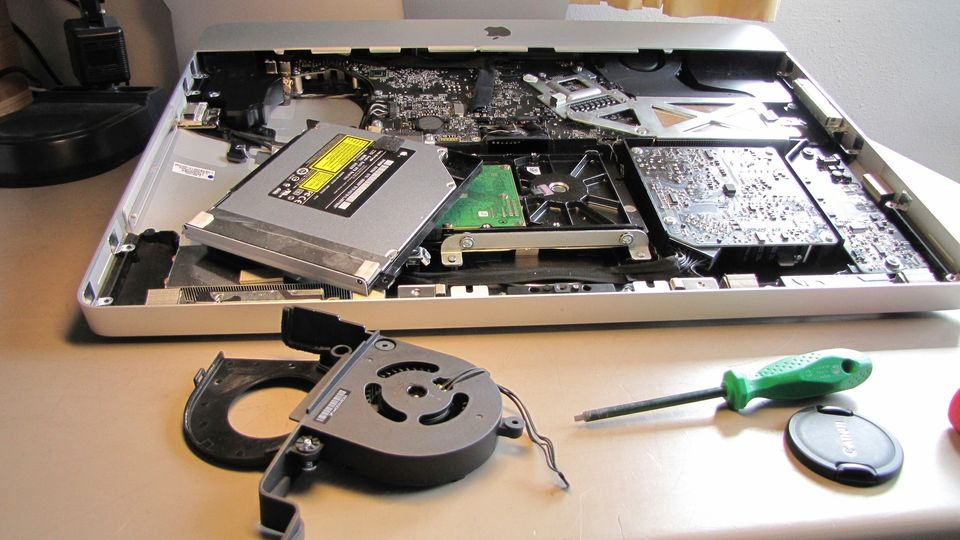

Portfolio

Project: PC Troubleshooting and Repair Services
Picture reference: https://scontent.fmnl17-3.fna.fbcdn.net/v/t39.30808-6/280292201_405630951572519_4176820690821570471_n.jpg?_nc_cat=103&ccb=1-7&_nc_sid=3635dc&_nc_ohc=9Syiqs2RPgoAX-8EY5W&_nc_ht=scontent.fmnl17-3.fna&oh=00_AfAmbze_Byqk252xYQ09c6PryKa2RYuaHPx78cRk86ePiw&oe=6589F8F0
Description: As part of my IT studies, I initiated a project to offer PC troubleshooting and repair services to individuals and small businesses. The goal was to address common computer issues, optimize system performance, and provide cost-effective solutions for clients facing technical challenges.Key Achievements:
- Diagnosed and resolved hardware and software issues for various clients, ensuring quick and efficient solutions.
- Implemented system optimizations, including disk cleanup, software updates, and malware removal, to enhance PC performance.
- Provided personalized consultations to educate clients on preventive measures and best practices for maintaining their PCs.
- Established a reliable client base and received positive feedback for prompt and effective troubleshooting services.

Project: Professional Cable Management and Network Setup
Picture reference: https://www.sourcesecurity.com/img/news/920/network-cables-920b.png
Description: As part of my hands-on experience in IT, I undertook a project focused on organizing and connecting wires for optimal functionality and aesthetics. The project involved cable management, network setup, and ensuring a clean and efficient wiring structure for both residential and small business environments.Key Achievements:
- Organized and labeled cables to prevent tangling and facilitate easy identification.
- Executed network setups for seamless connectivity, including routers, switches, and other networking equipment.
- Implemented secure and efficient wiring for computer systems, audiovisual setups, and other electronic devices.
- Provided clients with documentation and instructions for maintaining the organized wiring structure.